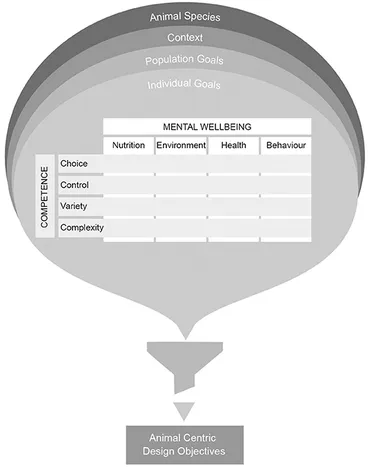
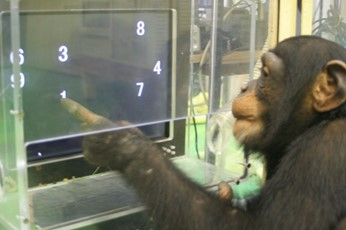

Animal-Computer-Interaction (ACI) is an expanding field that aims to benefit non-human animals with the use of technology. This article explores how ACI technologies are designed and adapted to suit animals effectively, guaranteeing positive experiences and welfare. The article focuses on models such as the Five Domains of Animal Welfare and the Coe Individual Competence Model, which helps compose the development of ACI technologies which keep the animals’ best interest in mind. Ethical considerations are also highlighted in regard to ACI, specifying on the difficulties of working with animals currently and the aims for future of ethics in the field. Finally, the article discusses current ACI technologies in use that can lead to greater animal care and research. The conclusion emphasises the need for a structured and regulated approach for ACI development, to support animals positively.
The uses of Animal-Computer-Interactions are constantly expanding from research, zoos, farms and for domestic animals. Animals’ interactions with machines attributes for a deeper understanding of how animals think and act, thus allowing for animals’ quality of life to be improved significantly (Mancini, C., & Nannoni, E., 2023). Understanding animal behaviour is essential as it allows us to successfully target important requirements for developing technologies. This leads to improved conservation efforts as advantageous technology can be used, suited to the environment. Maintenance of ecosystems health, disease management and human-animal interactions are all impacted by the use of ACI, highlighting the need for improvement in the field.
To make ACI more effective in aiding animals we must first understand what is responsible for achieving a positive improvement to the animals. The Five Domains of Animal Welfare model is often used to discover the link between wellbeing and lived experiences amongst animals. The model uses five layers to determine animal welfare, Nutrition(1), Environment(2), Physical Health(3), Behavioural interactions(4) which lead to the final layer Mental state(5). These factors are checked at the individual level for every animal to ensure a positive effect on their wellbeing. The model’s use has been adopted by many organizations such as the Zoo and Aquarium Association and the RSPCA. (Webber, S., Cobb, M. L., & Coe, J., 2022).
To increase the effectiveness of ACI technologies on animals’ lives, other models are used, such as the Coe Individual Competence Model. This model, developed for animal facility designers, help to create environments which encourage animals to develop competence, thus supporting welfare as less reliance on zoos occurs and they can become self-dependent. The 5 steps of this model, Choice(1), Control(2), Variety(3) and Complexity(4) leading to development of Competence(5) (Webber, S., Cobb, M. L., & Coe, J., 2022). Increasing competence leads to independence, helping rehabilitated animals integrate back into the wild with the correct skills to survive.
Figure 1. Welfare Through Competence model
In Figure 1, the Welfare through Competence (WtC) design is shown, this combines the two previously stated models, it is essential for creating and iterating on technologies made in ACI (Webber, S., Cobb, M. L., & Coe, J., 2022). To achieve the most beneficial results for the animal targeted each section must be followed and questioned. In the example of tiger conservation and reintroduction into the wild, context of the situation is important, as animals in the wild should receive little human contact or help to ensure competence and independence. Therefore, when designing technology such as AI trail cameras that detect animals and their movements, relaying the information to park managers, camouflage is an aspect designers should focus on, including no sound or noise pollution is released by the devices distracting the tigers' daily activities (GTFAdmin, 2022).
Animal-Computer-Interaction is a relatively new field of research starting early 2000s, meaning the principles and ethics of the subject are still in a volatile state. In research and development animals are often viewed as research instruments rather than living beings, as they cannot consent or state their best interest, this can lead to harm of these animals. Without taking the best interest of the animal into account it can lead to issues such as night-time lighting in chicken barns to stimulate productivity, which disturbs chickens’ natural body cycles (Coghlan, S., & Parker, C., 2023).
Recently a push for better practice has occurred. Bodies such as the Institutional Animal Care and Use Committee (IACUC) in the USA and Animal Welfare and Ethical Review Bodies (AWERBs) in the UK are responsible for ensuring ethical, scientifically sound and standardised practice in animal research (Mohan, S., & Huneke, R., 2019). New ACI research and development attempts to minimise any negative impact on the animal, mainly by increasing scrutiny on rules. Although these attempts to increase animals ‘enjoyment’ of research is a step in the correct direction, the interests of the study can be prioritised making regulations less important. In contrast human research, the interests of the individual are prioritised over the studies interests.
To date there is no legal ethics protocol that exists to regulate animal usage in research for developing animal technologies (Mancini, C., 2017). In Animal-computer interaction: a manifesto Clara Mancini. (2011) a set of new protocols are established which aim to 1) Improve animals life quality or expectancy, 2) Support animals in their activities, 3) Foster interspecies relationships, such as enabling communication between humans and dogs. If pushed these protocols would ensure animals a positive experience when receiving computer interaction (Resner, B.I., 2001).
Recently household pets have become targeted by ACI. For example, the use of Human Computer Dog Interfaces. These systems can provide visual and auditory representations of the user and dog, when in different locations. This allows for feeding and interaction with the dog remotely. More complex systems provide puzzles for the animal to complete in order to receive the food, providing positive reinforcement which is useful in training dogs.
Wearable systems have increased in use as technology decreases in size over the years, this allows for devices to be attached to animals without disrupting their comfort or daily activities. Collar tags have been developed which allows for animals to gain access through pet flaps which are otherwise locked, collars for guide dogs allow for audio commands to be sounded through speakers (Ritvo, S. E., & Allison, R. S., 2017).
ACI has become increasingly common in studying animals. Touchscreens have been used to study cognition in apes, including visual preferences, music discrimination and perceptual categorization such as that of Figure 2 (Tetsuro Matsuzawa, 2021).
Figure 2. Chimpanzee memory research
Understanding animals’ needs and behaviours is essential for enhancing ACI technologies to promote conservation efforts, animal independence and rehabilitation. As ACI advances, its applications will expand, meaning a structured and regulated approach is crucial to ensure the creation of these new technologies to ensure a healthy and positive environment for the animals.
Mancini, C., & Nannoni, E. (2023). Editorial: Animal-computer interaction and beyond: The benefits of animal-centered research and design. Frontiers in Veterinary Science, 9, 1109994–1109994. https://doi.org/10.3389/fvets.2022.1109994
Mancini, C. (2017). Towards an animal-centred ethics for Animal–Computer Interaction. International Journal of Human-Computer Studies, 98, 221–233. https://doi.org/10.1016/j.ijhcs.2016.04.008
Webber, S., Cobb, M. L., & Coe, J. (2022). Welfare Through Competence: A Framework for Animal-Centric Technology Design. Frontiers in Veterinary Science, 9, 885973–885973. https://doi.org/10.3389/fvets.2022.885973
Ritvo, S. E., & Allison, R. S. (2017). Designing for the exceptional user: Nonhuman animal-computer interaction (ACI). Computers in Human Behavior, 70, 222–233. https://doi.org/10.1016/j.chb.2016.12.062
Mohan, S., & Huneke, R. (2019). The Role of IACUCs in Responsible Animal Research. ILAR Journal, 60(1), 43–49. https://doi.org/10.1093/ilar/ilz016
Clara Mancini. (2011). Animal-computer interaction: a manifesto. interactions 18, 4 (July + August 2011), 69–73. https://doi.org/10.1145/1978822.1978836
Resner, B.I. (2001). Rover@Home : computer mediated remote interaction between humans and dogs. [online] dspace.mit.edu. Available at: https://dspace.mit.edu/handle/1721.1/62357
GTFAdmin (2022). Tiger, Tiger, in the Night…Now Visible in Real Time – Global Tiger Forum. [online] Globaltigerforum.org. Available at: https://globaltigerforum.org/tiger-tiger-in-the-nightnow-visible-in-real-time/
Coghlan, S., & Parker, C. (2023). Harm to Nonhuman Animals from AI: a Systematic Account and Framework. Philosophy & Technology, 36(2), 25-. https://doi.org/10.1007/s13347-023-00627-6
Tetsuro Matsuzawa (2021). Primate Memory Inference. https://doi.org/10.37282/991819.21.51